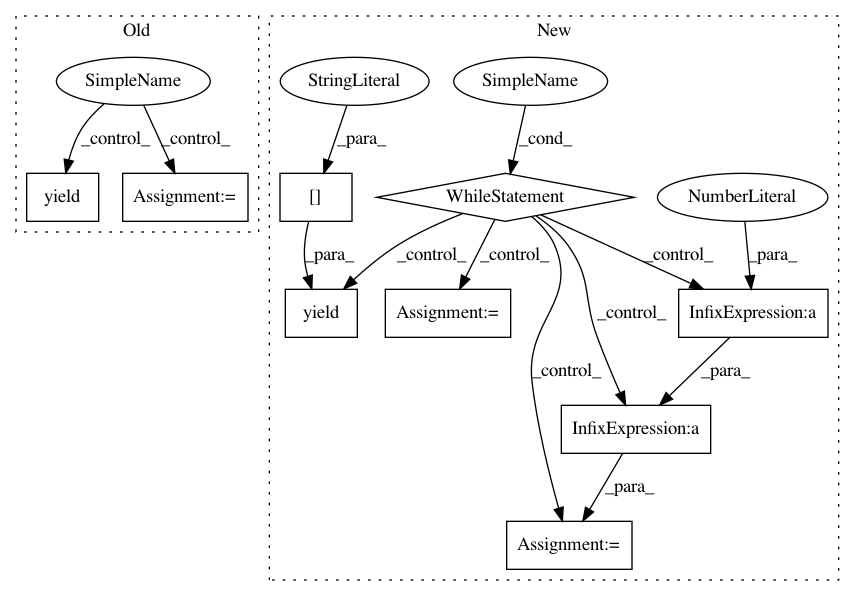

c52f6ea4fc8f58b389fd806c117f501fb8234976,fairseq/data.py,,_make_batches,#Any#Any#Any#Any#Any#Any#Any#Any#,293
Before Change
sample_len = max(sample_len, src_size, dst_size)
num_tokens = (len(batch) + 1) * sample_len
if yield_batch(idx, num_tokens):
yield batch
batch = []
sample_len = max(src_size, dst_size)
batch.append(idx)
After Change
sample_len = max(sample_len, src_size, dst_size)
num_tokens = (len(batch) + 1) * sample_len
while yield_batch(idx, num_tokens):
mod8_len = max(8 * (len(batch) // 8), len(batch) % 8)
yield batch[:mod8_len]
batch = batch[mod8_len:]
sample_len = max([max(src.sizes[id], dst.sizes[id]) for id in batch]) if len(batch) > 0 else 0
sample_len = max(sample_len, src_size, dst_size)
num_tokens = (len(batch) + 1) * sample_len
batch.append(idx)
if len(batch) > 0:
yield batch
In pattern: SUPERPATTERN
Frequency: 3
Non-data size: 9
Instances
Project Name: pytorch/fairseq
Commit Name: c52f6ea4fc8f58b389fd806c117f501fb8234976
Time: 2018-06-15
Author: edunov@apache.org
File Name: fairseq/data.py
Class Name:
Method Name: _make_batches
Project Name: acoular/acoular
Commit Name: 97a543976472f88b7922cc8f8ef3d7c0b6cd3dee
Time: 2012-02-06
Author: sarradj@tu-cottbus.de
File Name: beamfpy/sources.py
Class Name: PointSource
Method Name: result